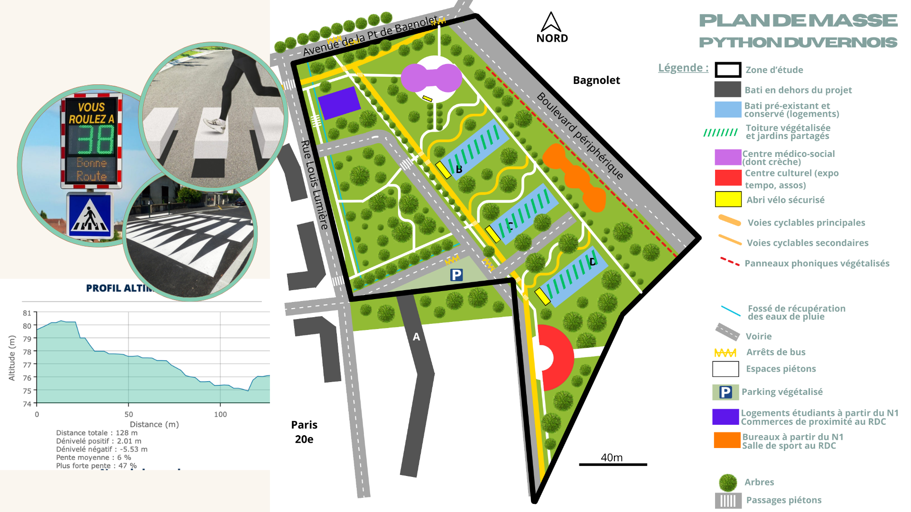

Réaménagement du quartier Python-Duvernois (Paris 20e)
Peut-on transformer une coupure urbaine en lien, quand le périphérique est à la fois la cause de l’enclavement et l’élément structurant du quartier ?
La SEMAPA et la mairie du 20e arrondissement de Paris, par l'intermédiaire de Caroline Wajsfelner, cheffe de projets urbains à la Mairie de Paris, nous ont commandé des études préliminaires sur l'avenir du quartier Python-Duvernois, situé entre le périphérique et la rue Louis Lumière et perçu comme en marge du vingtième arrondissement depuis les années 1950. Notre diagnostic met en évidence un bâti en îlots fermés, des circulations internes dégradées et de fortes nuisances liées au périphérique.
Le diagnostic territorial réalisé dans ce cadre révèle une organisation du bâti en îlots fermés, où trois tours font face au périphérique tandis qu'une barre limite l'accès vers le reste de l'arrondissement, renforçant un sentiment d'enclavement. Les circulations internes sont jugées problématiques avec des trottoirs étroits (voire inexistants), et des voies inadaptées aux cheminements piétons, cyclistes ou aux véhicules de collecte. Le quartier est par ailleurs exposé au bruit et à la pollution du périphérique, avec environ 17 500 véhicules transitant quotidiennement via la Porte de Bagnolet, tandis que les espaces verts existants restent peu entretenus et le bâti social présente par endroits un état dégradé.
Le projet de plan de masse que nous avons développé en réponse à ce diagnostic articule plusieurs volets :
La réhabilitation des trois tours existantes (plutôt que leur démolition), vise à créer des espaces de vie en hauteur grâce à des jardins partagés en toiture, végétalisés et équipés d'un système d'arrosage goutte-à-goutte alimenté par des cuves de récupération d'eau de pluie. Les 277 logements ainsi réhabilités intègrent un objectif de mixité sociale avec 40 % de logements publics, conformément au Plan Local d'Urbanisme bioclimatique de Paris.
Sur le plan des circulations, le projet prévoit un maillage de pistes cyclables sécurisées de 3,5 mètres connecté au réseau parisien, des chemins en zig-zag pour adoucir la pente du site, une limitation à 30 km/h et des aménagements de sécurisation comme des radars pédagogiques et des traversées piétonnes surélevées.
Le programme intègre également 420 m² de commerces de proximité, 1680 m² de logements étudiants pensés pour redynamiser le quartier et diversifier sa population, une crèche et un centre médico-social répondant au déficit d'équipements de proximité identifié pour une population jeune et familiale. Par ailleurs, la création d’un centre culturel de 530 m² (construit à partir de pierres recyclées du bâtiment existant) accueillera une maison des associations locales, ainsi qu'une micro-folie portée par le ministère de la Culture.
